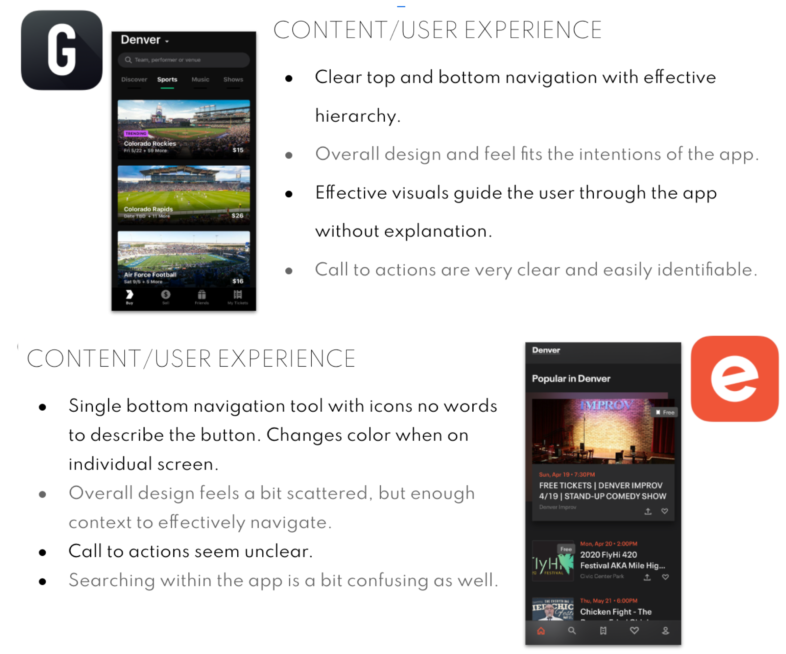

Component Library & Editor Web Platform
Tools Used
Sketch
Photoshop
Principle
Adobe Animate
Invision
Date
April 2020 -
June 2020
Team
Logan Peters,
UI Designer
Project Goal
Create a sophisticated and modern mobile event booking application. Reduce user distractions in event planning, by keeping design simple and only showing user’s what they want. Design the app for a user who lives in the city, using styles commonly seen on city streets.
Research & Synthesis
I received personas and annotated wireframes from the UX team to begin my research. I started with a visual competitive analysis and made adjustments to the wireframes based on my research. This served as the starting point for my designs.
Annotated wireframes based on user research*
Competitive analysis examples (2 of 8)*
Design Solutions: Logo
I started the design process with a series of logo sketches. Throughout the project, I continued to iterate on the logo, digitizing and testing it until finalizing the design.
Initial logo sketches*
Design Solutions: Mood Boards
I then created a set of divergent mood boards. While designing, I kept my research in mind, trying to mimic a city at night with dark backgrounds and bright lights.
Design Solutions: Style Tiles
I then designed style tiles for each of the mood boards I had created. With these, I conducted user testing, and found that one of the style tiles was a clear winner (below, furthest from the right). Users preferred the simple layout, the dark colors, and high contrast of the design. Using this style tile as a base, I created a high fidelity design.
Design Solutions: High Fidelity
Once settling on this direction, I designed high fidelity mock-ups and created a prototype on Invision for usability testing. Usability testing informed the best layout, appearance of buttons, and search bar appearance.
Home page iterations based on usability testing*
Howl app and responsive desktop marketing page*
Design Systems
I built out an in-depth design system for both the app and the responsive marketing site. I included a lot of detail, so that developers could pick up the project and start building.
What I learned
This was the first major project I worked on by myself from start to finish. A lot of work went into completing this project, and I was happy with the outcome. While I believe the design should always be iterated on, I was content with where I landed with this project despite the time constraints. I learned a lot about responsive design, and learned how to use a handful of new technologies, like Figma, Illustrator, and Principle.